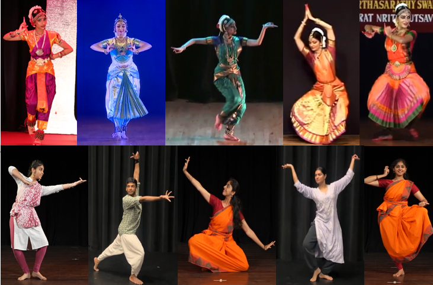
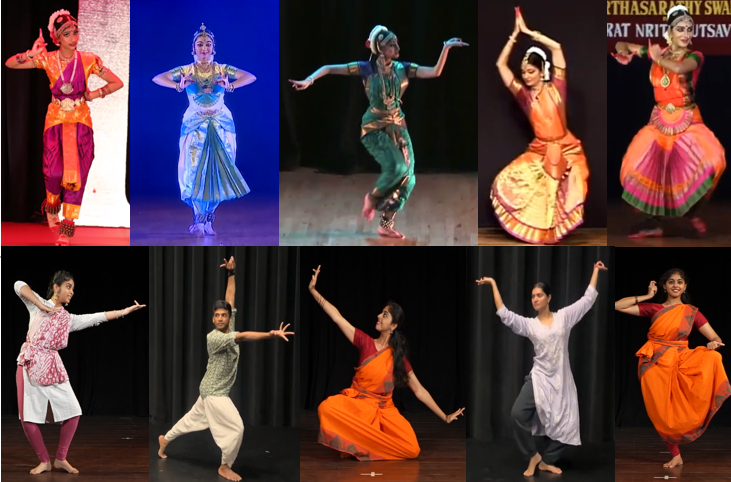
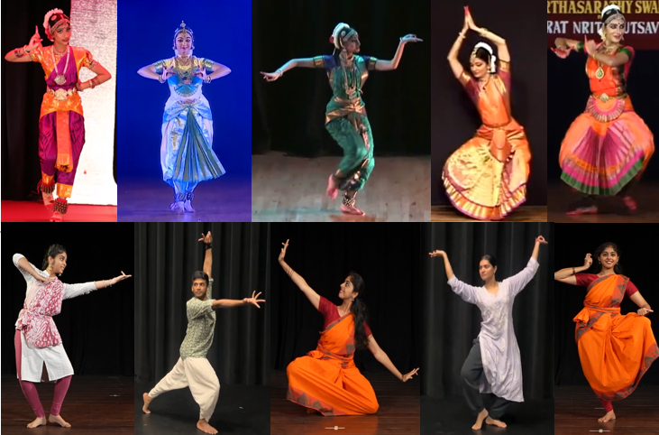
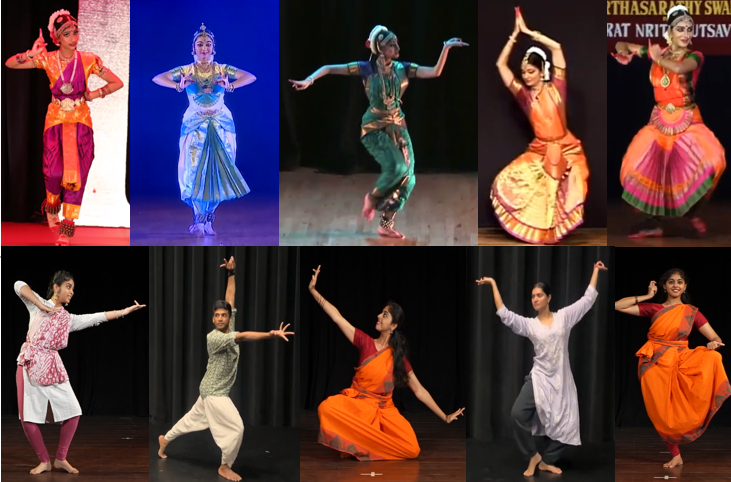

Lipisha Chaudhary
PhD Candidate, Computer Science · University at Buffalo, SUNY
I’m a fourth-year PhD student in Computer Science and Engineering at the University at Buffalo (SUNY), advised by Dr. Ifeoma Nwogu. I work as a Research Assistant in the Human Behavior Modeling Lab, where our research explores 3D human behavior modeling, pose estimation, facial anonymization, and AI for social good — with my focus centered around inclusive, multimodal learning for sign language understanding.
I earned my Master’s in Computer Science from Rochester Institute of Technology (RIT), where I also worked as a Research Assistant. I was a PhD Research Intern at Dolby Labs, working on audio-visual understanding. I’ve also interned at Amazon Alexa AI for two summers as an Applied Scientist Intern, contributing to teams working on speaker understanding and ASR error detection and refinement.
My research is focused on understanding how people express themselves through movement whether it’s in sign language, gestures, or other forms of nonverbal communication. I work with 3D motion data to capture the subtle, meaningful variations in hand, body, and facial movements that are often overlooked. Much of my work supports sign language understanding and generation, but I’m equally interested in applying these concepts to any context where communication goes beyond words. I believe in building systems that understand the complexity of human expression and help make technology more inclusive and responsive to everyone.
I love the energy that comes from working in teams where ideas flow and people support each other. When I’m not debugging something, I’m likely in the kitchen baking, lying around doing nothing productive, and loving every minute of it.
 

 
